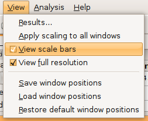
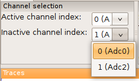
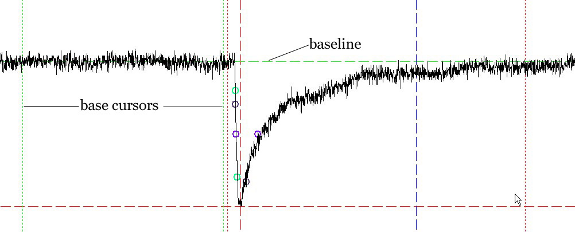
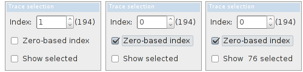
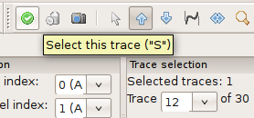
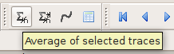

Getting started¶
| Author: | Christoph Schmidt-Hieber (christsc at gmx.de) |
|---|---|
| Date: | 20 February, 2019 |
File opening¶
This tutorial will cover the basic program functionality from opening a file to fitting functions to data.
- Download Stimfit from here and install it on your computer.
- Download a sample file from here .
- Open the data file: you can either double-click it from an Explorer Window, or you can start Stimfit and choose “File”->”Open…” from the menu.
- The file will be opened in a new child window, and the first trace will be displayed.
Trace scaling¶
If you just see scale bars, but no trace is displayed, press F or click the corresponding button (Fig. 2). This will fit the first trace of the active channel (plotted in black) to the screen.

Fig. 2: Fit traces to the window size.
If you prefer coordinates to scale bars, you can check “View”->”Scale bars” in the menu (Fig. 3).
Fit the inactive channel (plotted in red) to the screen as well. Press 3 . The buttons labeled 1 and 2 should now both be highlighted (Fig. 4). That means that any changes to the scaling will now be applied to both channels simultaneously.
Fig. 3: Show coordinates rather than scale bars.
Press F again. The inactive channel (red trace) will now be fitted to the screen as well. If you want to scale channels individually, press either 1 or 2.

Fig. 4: Scaling applies to both channels.
Enlarge the vertical scale: Press +. Depending on which channel(s) you selected, the vertical scale will be enlarged by a factor of 10%. Shrink the scale back to its original value by pressing -.
Enlarge the time scale: Press Ctrl and + simultaneously. The time scale will be enlarged for both channels, regardless of which channel you have chosen, because Stimfit assumes that both channels have been sampled at the same time and frequency.
Shrink the time scale back to its original value by pressing Ctrl and - simultaneously.
Shift the trace by pressing Ctrl and one of the cursor (arrow) keys simultaneously.
You can zoom into parts of the trace using a zoom window: Press Z. The zoom button (showing a magnifying glass) will be highlighted (Fig. 5).
Drag a window over the region of interest holding down the left mouse button. Release the left mouse button once you are done. When you right-click on the window, a menu will pop up showing different zoom options. Select “Expand zoom window horizontally & vertically” (Fig.6).

Fig. 5: Setting the mouse cursor to draw zoom windows.

Fig. 6: Magnifying a region of interest.
If you cannot see any trace because you zoomed in or out too much, press F to fit the trace to the screen again.
Navigate within a file¶
You can toggle through traces using the left and right keys (without pressing Ctrl at the same time). The current trace number will be displayed in the drop-down box labeled “Trace … of …”. You can directly select a trace from this box as well (Fig. 7).
All measurements will be performed on the active channel plotted in black. You can swap channels by either selecting “View”->”Swap channels” from the menu, or setting the channels in the drop-down boxes (Fig. 8).

Fig. 7: Selecting a trace.
Fig. 8: Setting the active and inactive channel.
In files with more than two channels you can scroll the active channel using the up and down keys while holding down Ctrl. In addition pressing the X key will set the currently active channel to the reference channel.
Analysis of individual events¶
An “event” can be anything from an EPSC to an action potential. In this case, we will analyze a large spontaneous EPSC in trace no. 12 of the second channel. Navigate to trace number 12, swap channels, and zoom into the large EPSC as described above. All results are displayed in the results table (Fig. 9). You can select which results to show in the bar by right-clicking on one of the column or row title labels, and then selecting or unselecting the corresponding items.
Stimfit uses cursors to define measurement windows. Cursors are represented by vertical dashed lines extending throughout the window, similar as on an oscilloscope. For example, the baseline can be calculated as the average of all sampling points between the two base window cursors (vertical two dashed lines) or the median of the points between these cursors. To move the cursors by clicking the left mouse button where you want the baseline calculation to start. Set the right cursor by clicking the right mouse button where you want the baseline calculation to end. Press Enter. The result of the baseline calculation is displayed in the results table, and the baseline is plotted as a horizontal green dashed line (Fig. 10).

Fig. 9: Showing analysis results.
Fig. 10: Setting the baseline window cursors.
Note
You have to press Enter after changing any cursor position to
update all calculations. Otherwise, you will see the results of your
previous cursors settings. Alternatively, you can call stf.measure()
from the Python shell.
The peak value will be determined between the two peak window cursors (vertical red dashed lines). To move the cursors press P. The corresponding tool-bar button will be highlighted. Set the left cursor by clicking the left mouse button where you want the peak detection to start. Set the right cursor by clicking the right mouse button where you want the peak detection to end. Press Enter. The result of the peak calculation is displayed in the results bar. “Peak (from base)” is the difference between the peak value and the baseline, and “Peak (from 0)” is the “raw” value of the peak, measured from zero, without any subtraction. A horizontal red dashed line will indicate the peak value, and a vertical dashed line will indicate the point in time when this peak value has been detected (Fig. 11).

Fig. 11: Setting the peak window cursors.
There are three ways the peak value can be calculated: As a default, it is calculated as the maximal absolute value measured from baseline; hence, both positive- or negative-going events may be detected, whichever is larger. If you want only positive-going events to be detected, select “Edit”->”Cursor settings” from the menu. A dialog will appear. Select the “Peak” tab, and then check “Up” radio button (Fig. 12). Click the “Apply” button to measure the peak using your new settings. If you only want negative-going events to be detected, select “Down” instead. Selecting “Both” resets the peak calculation to the default mode. If you want to set the peak direction from the Python shell, you can call stf.set_peak_direction(), where direction can be one of “up”,”down” or “both”. The Python shell will be explained in some more detail in chapter 2.

Fig. 12: Setting the peak calculation properties.
In case the event you want to analyze is noisy, it may be helpful to use the average of several neighboring sampling points for the peak calculation instead of a single sampling point. A moving average algorithm will then be used to calculate the peak value. The number of sampling points can either be set in the cursor settings dialog (Fig. 12) or from the Python shell using stf.set_peak_mean(), where pts is the number of sampling points.
Some other values describing the event can be found in the results table (Fig. 13):
- RT(20_80%) refers to the time required for the signal to change from 20% to 80% of the peak value (measured from the baseline), commonly called the “20-to-80%-rise time”. The points corresponding to 20 and 80% of the peak value are indicated by green circles. They are determined by linear interpolation between neighboring sampling points.
- t1/2 refers to the full width of the signal at half-maximal amplitude (measured from the baseline), commonly called “half-duration”. The points where the signal reaches its half-maximal amplitude are indicated by blue circles. Again, this is determined by linear interpolation between neighboring sampling points.
- Rise and Decay refer to the maximal slope during the rising and the falling phase of the signal, respectively. The corresponding points are indicated by violet circles.
- R/D is the ratio of the maximal slopes during the rising and the falling phase of the signal
Note
From version 0.8.6 on, the rise time and the half duration is independent of the baseline and peak window cursor positions. In versions prior to 0.8.6, the baseline cursors had to precede the peak window cursors. However, the calculation of the maximal slopes of decay is still restricted to the peak window.
- .

Fig. 13: Analysis of individual events.
Analysis on selected traces¶
You can perform the analysis of a repeated event in a recording that contains several traces. This is important if you want to study the time evolution of an event. The Trace selection window informs you about the number of traces in your recording and the index of the current trace. Zero-based index (i.e first trace is zero, and not one) can be selected if checked in the corresponding checkbox.

To perform the analysis on only some traces, you need first to select them. For that, we can move the current trace with the left/right arrow keys and buttons (as described above), or click up/down buttons in the Trace selection window. Press S if you want to select the current trace, or click the selection button (Fig. 14). The number of traces that you have already selected will be indicated in the Trace selection window. You can click on the checkbox if you want to visualize them together with your current trace.
Fig. 14: Trace selection.
If you selected a trace accidentally, you can remove it from the selected traces list by pressing R or clicking the trash bin button to the right of the selection button (Fig. 14).
After selecting some traces, we can select Analysis->Batch Analysis to select the type on the selected traces.

Once the measurements are selected, a result table will appear, that contains a first column with the ordered of traces and several columns with the measured parameteres.
Note
This is a general concept for most analysis functions: you first select traces, and the analysis will then be performed on the selected traces.
Average calculation¶
First, you have to select the traces to average (Fig. 14). Once you are done, click the “Average” button to compute the average of all selected traces (Fig. 15). A new child window will pop up showing the average. In the original child window, the average is shown as blue trace.
Fig. 15: Average calculation.
Note
If you want to perform an average (or any other measurement) of all traces in a recording, select Edit-> Select all, or type Ctrl+A
Fitting functions to data¶
Navigate to trace number 12 which contains a large spontaneous EPSC. Swap channels as described above, then zoom into the large EPSC.
Set the peak and baseline cursors appropriately; the peak and baseline values will be used as initial values for the fit. Do not forget to press Enter
The function will be fitted to the data between the two fit window cursors (gray vertical dashed lines). To move the cursors, press D (historically “D” stands for “decay”). The corresponding button will be highlighted. Set the left cursor by clicking the left mouse button where you want the fit to start. Set the right cursor by clicking the right mouse button where you want the fit to end. Press Enter to confirm the cursor settings.
Select “Analysis”->”Fit”->”Non-linear regression” from the menu. Select a bi exponential function (Fig. 16).

Fig. 16: Non-linear regression settings.
The fitted function will be displayed as a thick gray line, and a table showing the best-fit parameters and the sum of squared errors (SSE) will pop up (Fig. 17).

Fig. 17: Results of a non-linear regression using a bi-exponential function.
stf.leastsq() can be called from the Python shell to fit the function with index fselect to the data. fselect refers to the number that you can find in front of the function in the fit settings dialog (see Fig. 16). If refresh=False, the trace will not be re-drawn, which can be useful to avoid flicker when performing a series of fits.
You can use stf.get_fit() to get the function resulted from the fitting. This returns the evaluated function as a two dimensional NumPy array. The first dimension is the x-axis (e.g time), and the second dimension is the function evaluation results.